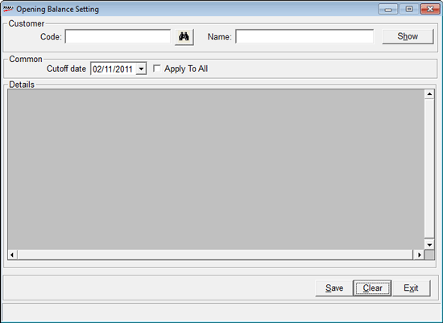
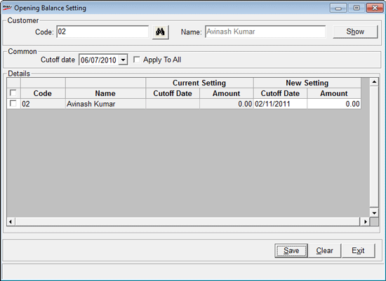

The cutoff date and the opening balance of each customer, for whom credit billing is allowed, can be entered in the opening balance window.
Here, cutoff date refers to the date before which the bills will not be considered for calculation of pending bills.
The opening balance refers to the amount that can be recorded as the pending amount up to the cutoff date.
How to reach: Cash > Credit Sale Management > Set Opening Balance
Note: The bills made on the cutoff date will be reflected in the Pending Amount column of the Payment Collection window. Hence, define the opening balance as the amount pending before the cutoff date.
Example: Define the opening balance as Rs.2000/- and the cutoff date as 1st February 2012 for Customer A. Any credit bill made for the period from 1 April 2011 to 31st January 2012 will be considered to be paid in full, and therefore will not be shown in the Pending Amount section in the Payment Collection window. The only amount that will be taken into consideration as the pending amount for the customer is Rs.2000/-, but there will be no bill reference for it.
Enable this Setting
The user can set the cutoff date and the opening balance of each customer by setting the relevant parameters under Sysparam against the Category Credit Management.
The opening balance window is displayed.

On opening the screen, all the customers’ codes and names, for which credit invoice is allowed, can be seen prefilled in the Details section. Under New Setting, in the Cutoff Date column, the Shoper open date will be automatically prefilled, and the default amount is 0.
Set the Opening Balance
Perform the following steps to set the opening balance:
1. Select the customer.
2. Provide the Cutoff Date for all the customers selected. By default, it will be prefilled with the Shoper open date. In order to apply the same date to more than one customer, select those customers. One cutoff date can be applied for all the selected customers by entering the date in the Common Cutoff date section of the window and selecting Apply to All.
Note: Bills on which partial payment has been done should not be pending before the selected cutoff date.
3. Enter the opening balance for the selected customer
4. Save the dates and balances
An alternate way to set the opening balance and cutoff date for customers individually is given below.
Customer
Code: Click the button, or press F2
The Code and the Name will be displayed.
Show: Click to display the opening balance details of the selected customer.
Common
Cutoff date: Click the drop down button to select the Cutoff date. The bills for the period before the Cutoff date are excluded.

The following details are displayed:
Code: The customer code is displayed
Name: The name of the customer is displayed
Current Setting: The current Opening Balance setting, including the Cutoff Date and the Amount is displayed
New Setting: The new Opening Balance setting, including the Cutoff Date and the Amount is displayed